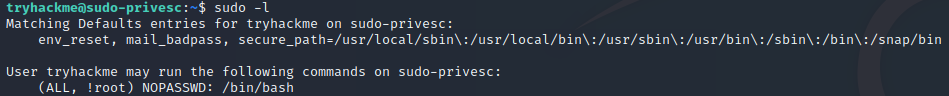

Sudo Security Bypass (CVE-2019-14287)
- CVE-2019-14287 is a vulnerability found in the Unix Sudo program
- This exploit has been fixed, but may still be present in older versions of Sudo (versions < 1.8.28)
- manually choose to execute sudo as another user: sudo -u#<id> <command>
- sudo can be configured by editing a configuration file called /etc/sudoers
-
- safely edit with the command sudo visudo, which checks when you're saving to ensure that there are no misconfigurations
- <user> ALL=(ALL:!root) NOPASSWD: ALL
-
- added in the sudoers file, granting user extra permision but not executing as root
- CVE-2019-14287
-
- if you specify a UID of -1 (or its unsigned equivalent: 4294967295), Sudo would incorrectly read this as being 0 (root)
- execute a command as root, despite being explicitly prevented from doing so
- this will only works if you've been granted non-root sudo permissions for the command
#1 What command are you allowed to run with sudo?
- 
#2 What is the flag in /root/root.txt?